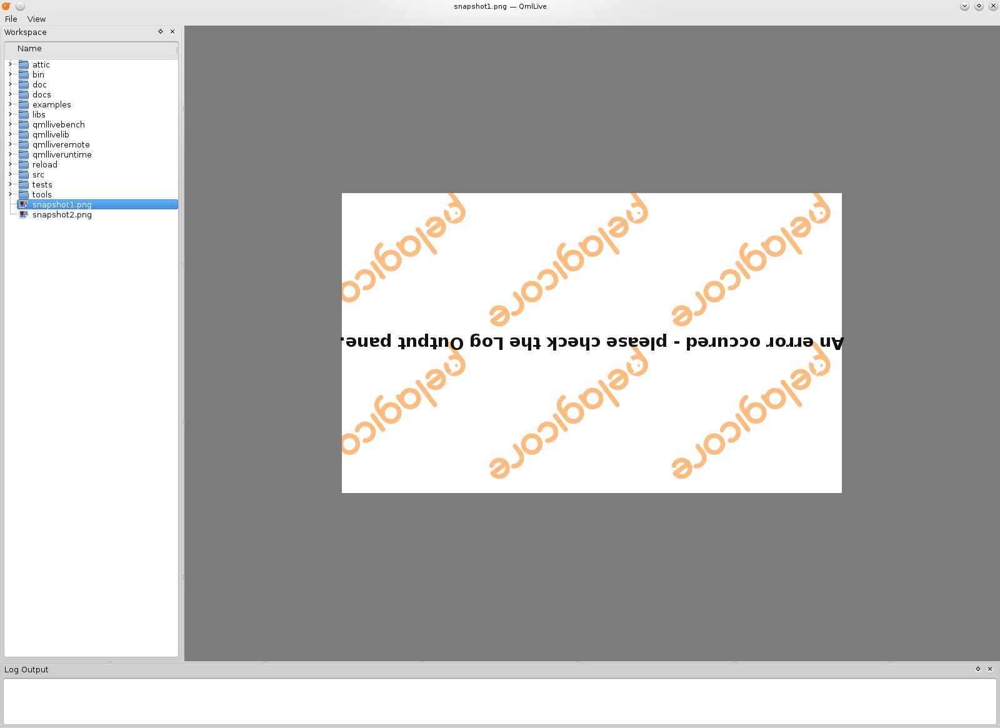

ContentPlugin Example
Demonstrates how to write a Content Plugin for QmlLive.

The plugin written in this example displays images like the built-in Imageviewer in QmlLive, but it shows the content rotated only works on *.png files.
We will start by reviewing the interface defined in contentadapterinterface.h in the QmlLive source code. This interface can be used to add a new ContentAdapter to QmlLive. The ContentAdapter will be used to display any content that shouldn't be handled by the QmlLive Runtime, like displaying an image.
class QMLLIVESHARED_EXPORT ContentAdapterInterface { public: enum Feature { QtQuickControls = 0x1 }; Q_DECLARE_FLAGS(Features, Feature) virtual ~ContentAdapterInterface() {} virtual void cleanUp() {} virtual bool canPreview(const QString& path) const = 0; virtual QImage preview(const QString& path, const QSize &requestedSize) = 0; virtual bool canAdapt(const QUrl& url) const = 0; virtual bool isFullScreen() const { return false; } void setAvailableFeatures(ContentAdapterInterface::Features features) { m_features = features; } ContentAdapterInterface::Features availableFeatures() { return m_features; } virtual QUrl adapt(const QUrl& url, QQmlContext* context) = 0; private: Features m_features; };
The ContentAdapterInterface class declares four functions. The first function canAdapt(const QUrl&) returns whether the plugin can display the given file or directory.
The second function adapt(const QUrl& url, QDeclarativeContext* context) returns a custom QUrl which will be used by QmlLive to display the given QUrl. The returned QUrl always has to point to a QML file used to display the content. To be able to control the returned QML file, context can be used to set custom properties which will be exported to the QML file.
canPreview() and preview() are used for generating preview thumbnails. We use the easiest implementation for these two methods.
MyContentAdapterPlugin
class MyContentAdapterPlugin : public QObject, public ContentAdapterInterface { Q_OBJECT Q_INTERFACES(ContentAdapterInterface) public: explicit MyContentAdapterPlugin(QObject *parent = 0); bool canPreview(const QString& path) const; QImage preview(const QString& path, const QSize &requestedSize); bool canAdapt(const QUrl& url) const; QUrl adapt(const QUrl& url, QDeclarativeContext* context); };
The MyContentAdapterPlugin implements the interface to QmlLive. It subclasses QObject and the required ContentAdapterInterface.
Q_INTERFACES(ContentAdapterInterface)
The Q_INTERFACES macro will be used to register the plugin to Qt's plugin system.
We have to overload the canAdapt(const QUrl&) function if we want it to be called for the right file type: *.png." That's why we check the file ending on the given url and return true when it's a png file.
bool MyContentAdapterPlugin::canAdapt(const QUrl &url) const { return url.toLocalFile().endsWith(".png"); }
If the plugin accepts the file, adapt(const QUrl& url, QDeclarativeContext* context) will be called. Here we export the path to the image as a special property in the context to be able to access the fileName from within our QML file. Afterwards we return a QUrl pointing to our QML file which is inside a ResourceFile.
QUrl MyContentAdapterPlugin::adapt(const QUrl &url, QDeclarativeContext *context) { context->setContextProperty("imageSource", url); return QString("qrc:/mycontentadatperplugin/plugin.qml"); }
Now only the implementation of canPreview() and preview() are missing. Here we just add some dummy implementation because we don't want to add this functionality.
bool MyContentAdapterPlugin::canPreview(const QString &path) const { Q_UNUSED(path) return false; } QImage MyContentAdapterPlugin::preview(const QString &path, const QSize &requestedSize) { Q_UNUSED(path); Q_UNUSED(requestedSize); return QImage(); }
plugin.qml
The plugin.qml file is our ImageViewer. In it we create an Image Element and set the source to our exported property imageSource. The rotation property will be set to 180.
import QtQuick 1.1 Rectangle { width: 300 height: 300 Image { anchors.centerIn: parent rotation: 180 source: imageSource } }
The Resource File
Because we don't want to fiddle around with paths, we include our QML file into a resource file. It is important to use a unique prefix in the resource file in order to avoid conflicts with QmlLive, which also uses resource files. The best approach is to use the plugin name as a prefix.
Files: